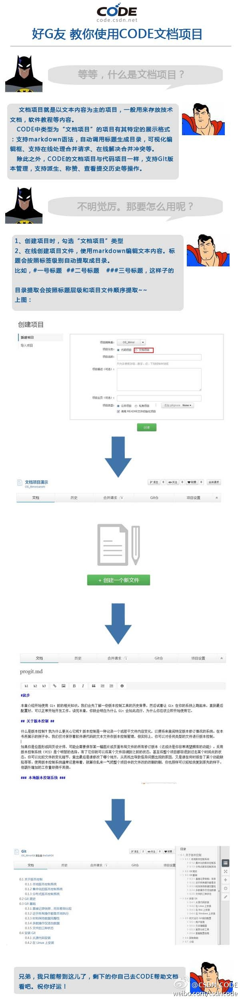

CSDN会员肯定欢迎啊。//@蒋涛CSDN: 回复@阿里巴巴国际:@Ada李力 这个我们组织工程师队伍吧 //@阿里巴巴国际:我们办了个约会活动，但外贸圈女多男少，求互联网圈的技术男来救急，每人送一个长发及腰的妹纸， 包邮。活动链接： 网页链接 //@蒋涛CSDN:这个文档功能组织资料很方便！@CSDN_CODE:昨天CODE宣布正式开放注册之后，迎来了一大波热情的用户！日新增用户量突破了之前的历史记录！我们很欣慰！！考虑到很多新用户对CODE还不太熟悉，特别是对于CODE的一些特色功能不了解，今天开始，我们将在微博上简要的介绍一下我们的几个重要功能~好了，有请“好G友”代言人讲解#CODE文档项目#！ 